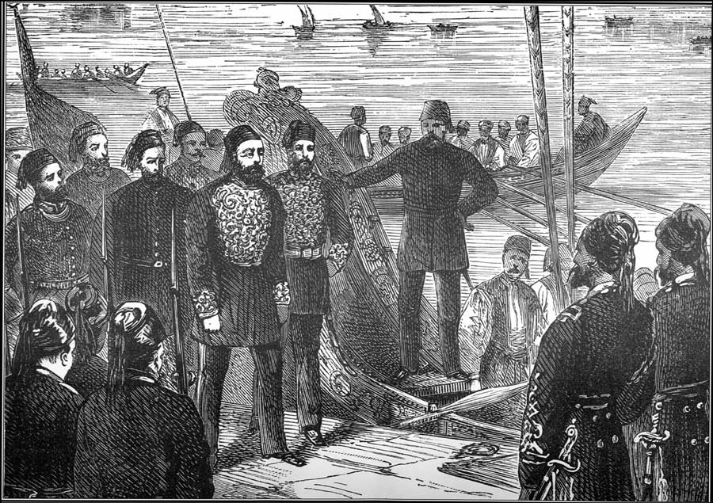
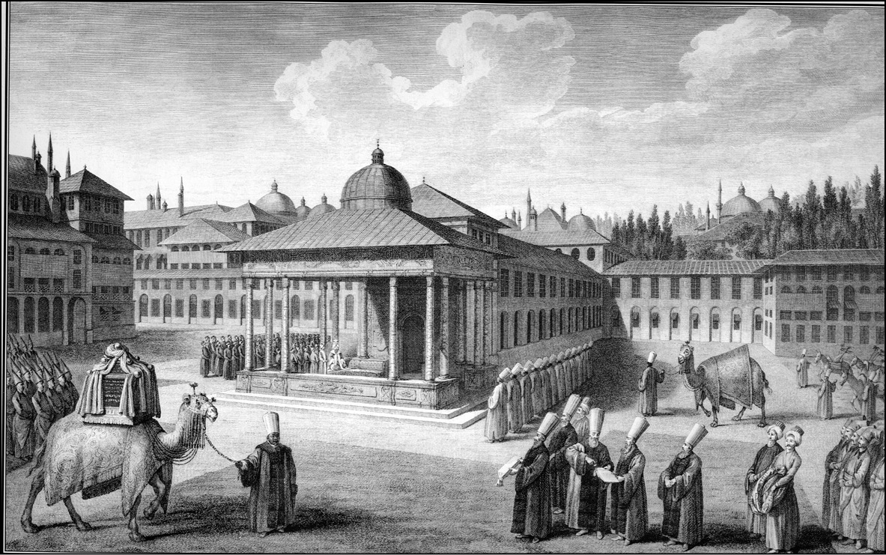
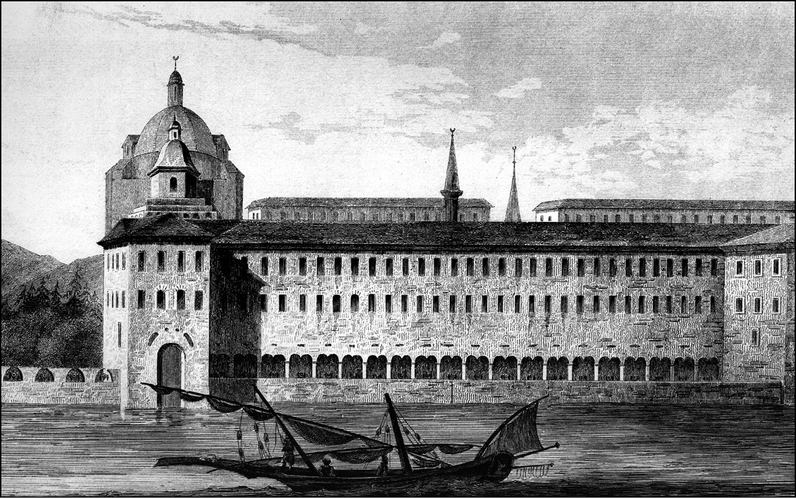

MİDHAT PAŞA VE YÖNETİMİ
Hiç şüphesiz ki Osmanlı Tanzimat asrının en önemli simalarından biri Midhat Paşa’dır. Aslında Midhat Paşa’yı Tanzimat Dönemi’nin ikinci kuşağına dahil etmek gerekir. Yaşı itibariyle ve mevkii itibariyle birinci grubun önderleri, hepimizin bildiği gibi, Mustafa Reşid Paşa, Ali ve Fuad Paşa’dır. Cevdet Paşa ile Midhat Paşa daha genç kuşağı teşkil ederler.
Bizim tarihimizde Tanzimat Dönemi’nin en önemli vasfı, kendisinden evvelki ve sonraki dönemlere göre üstün tarafı, ne selefi ne halefi olan grup dediğimiz Tanzimat grubunun en büyük özelliği, fikir ayrılıklarını, tavır ayrılıklarını, sosyal köken ayrılıklarını bir kenara koyup bir arada iş çıkarabilen bir grup olmasıdır. Bunlar çok önemli devlet adamlarıdır.
Ve itiraf etmek gerekir ki bu tip seçkin, birbiriyle geçinebilen ve iş çıkarabilen kadro ondan sonra da bir daha gelmemiştir. İttihat ve Terakki’de de olmamıştır. Cumhuriyet Dönemi’nin en büyük problemlerinden biri ise, geçirdiğimiz uzun harpler dolayısıyla maalesef insan noksanlığıdır. Dâhi bir önder çoğu zaman projelerini gerçekleştirecek kadrolardan yoksun kalmıştır. Tanzimat asrının bu insanları hiç şüphesiz ki Osmanlı İmparatorluğu’nun 18. yüzyılında başlayan 19. yüzyılda devam eden eğitim reformlarının geliştirdiği, ortaya koyduğu insanlardır. İçlerinde okumuş yazmış ailelerden gelenler olduğu gibi, fakir bir çarşı esnafından, kapıcıdan gelen Mehmed Emin Âli Paşa gibi büyük bir sadrazam, orta sınıf bir İstanbul ailesinden gelen Midhat Paşa ya da bugünkü Bulgaristan’ın Tuna boyunda, seçkin çiftlik sahibi bir aileden gelen Cevdet Paşa gibi isimler de vardır.
Midhat Paşa [Ahmed Şefik] 1822 yılında İstanbul’da doğdu. Tuna boyuna göç eden bir ulema ailesinden olduğu bilinmektedir. Genç yaşta kaleme intisap etti. Tanzimatçıların bir grubunun özelliği regular mektep tipli olması, mektep eğitimi görmekten çok Bâbıâli kaleminde yetişmeleridir. Kalemde çırak olduğu zaman Ahmed’i diğer Ahmedler’den ayırmak için kendisine Midhat dendi. Benzer bir şekilde, Ahmed Cevdet Paşa’ya da medreseye girdiği zaman diğer Ahmedler’den ayırmak için Cevdet adı ilave edilmişti. Genç Midhat Bâbıâli’de kendi kendisini yetiştirmiştir. Hiç şüphesiz ki Mehmed Emin Ali Paşa, Reşid Paşa gibi büyük ekolün yanında onlar daha ikinci sırada gelirler.
O grubun mensuplardan birisi de Ziya Paşa’dır. Midhat Paşa’nın farkı, Osmanlı vilayet idaresinde normalin üstünde bir başarı göstermesidir. Böyle bir vali çok az bulunur. Nitekim Midhat Paşa için, 19. yüzyılda sadece Osmanlı İmparatorluğu’nun değil, bütün Avrupa’nın en büyük valisi demekte hiçbir beis yoktur. Ve birçok kaynak da bunda hemfikirdir. Zaten şöhreti gövde yapmıştır.
O dönemde Avrupa’da ün yapan bir başka vali daha vardı. Bu da sonradan Osmanlı İmparatorluğu’na gelecek, çok kötü bir diplomat olan İgnatief’dir. General İgnatief Doğu Sibirya’da fevkalade bir valilik yapmış ve şöhret sağlamıştır. Midhat Paşa’nın da Bulgaristan, o zamanki adıyla, Tuna Vilayeti’ndeki başarılı valiliğinden sonra maalesef bizim devlet teşkilatımızda merkeze gelmesi, Şura-yı Devlet nazırı olarak tayin edilmesi onun makus talihinin başlangıcı olmuştur.
Midhat Paşa, nezarette ve sadarette vilayetlerdeki parıltısını gösteremedi. Şansı yardım etmedi. Buna aldığı yanlış kararlar, belki yanlış kombinasyonların içine girmesi de neden oldu. Bir zamanlar birlikte çalışıp başarılı işler çıkardığı çalışma arkadaşlarıyla karşı cephelerde yer aldı. Ahmed Cevdet Paşa ile olan ilişkisi böyledir. Osmanlı 19. yüzyılının ünlü vilayet reformlarını birlikte yapan, 1864 Vilayet Nizamnamesi’ni birlikte hazırlayan bu adamlar nihayet o duruma geldiler ki, Yıldız Mahkemesi’nde birisi yargılayan, öbürü yargılanan oldu. Ve Midhat Paşa’nın kaderi 1882 yılında bir zindanda noktalandı.
Hâlâ münakaşalı olan bu ölümde, Paşa’nın katledildiği görülüyor. Vakıa, verilen idam cezası II. Abdülhamid tarafından müebbede, sürgüne çevrilmişti. Bu müebbet cezayı tenkit edenlerin başında da ünlü Gazi Osman Paşa gelmiştir. Hatta şöyle demiştir: “İdama hükmedilmesi ve bu hükmün de müebbede tebdil edilmemesi, Padişah’ın bile böyle bir hakkının olmaması gerekir.” Gerçekten de yakın tarihî müteârifeleri değiştirmekte bir hayli payı olan tarihçi Yılmaz Öztuna bu safhayı çok vurgulayarak kitaplarında ele alır.
Kimdir Midhat Paşa? Son asrın efsanesidir. Osmanlı coğrafyasına sayısız eserler bırakan ve imparatorluk hâkimiyetinin tarihî göstergelerinin bugüne kadar uzanmasını sağlayan bir büyük devlet adamı. 1864’te Vilayet Nizamnamesi çıkarıldığı zaman, yeni vilayet düzeninin pilot bölgesi olarak bugünkü Bulgaristan’ın kuzey kesimi seçildi. Burası aşağı yukarı Tırnova, Sofya, Rusçuk, Varna, Vidin gibi bölgeleri içermektedir. Tuna Vilayeti’nin merkezi bugünkü Rusçuk’tu. Tuna kıyısındaki bu şehir Tuna ticareti dolayısıyla öteden beri zenginleşen bir yerdi. Ama hiç şüphe yok ki Midhat Paşa’nın vilayeti sırasında fizikî görünümü bile üçe katlandı. Neo-Rönesans stilinde yapılmış muhteşem vilayet konağı adeta Rusya vilayetlerindeki vali konaklarına benzemektedir. Çünkü her ikisi de aynı mimari zevke göre yapılmıştı.
Bulgaristan’dan sonra Fırat’ta, ardından Şam’da birbiri peşi sıra yükselen Midhat Paşa Mektepleri parlak bir mimarînin örnekleridir. Tuna valiliği sırasında bu bölgede 3 bin km şose yol yapılmış, 1400’ü aşkın köprüyle Bulgaristan yani Tuna Vilayeti birbirine bağlanmıştır. 1853 Kırım Savaşı’ndan sonra Ruslar, gerek Kırım gerek Kafkasya’da yerli Türk halkı göçe zorlamaktaydılar. Göç eden perişan muhacir kitleler ancak Midhat Paşa’nın o bölgedeki valiliği sırasında yaptığı çalışmalar sayesinde rahat etmişlerdir.
Vilayetin Müslüman nüfusu üç misline katlanmıştır. Özellikle bugün Romanya’da kalan Mecidiye kazası, Rusçuk, Varna, Tırnova ve Vidin gibi yerlere yerleştirilen Rusya göçmenleriyle hem nüfus artmış hem de ziraî hayatta canlanma başlamıştır. Köylünün teşebbüs gücünü sağlamak için mal sandıklarını birleştirerek Ziraat Bankası’nı meydana getiren Midhat Paşa’dır. Ayrıca köylüyü aşırı borçlanmadan, tefecilerin elinde çektikleri zulümden kurtarmak için, Emniyet Sandığı’nı da oluşturmuştur. Bu anlamdaki kamu bankacılığının müteşebbisi ve öncüsü bizzat Midhat Paşa’dır.
Midhat Paşa bir şey daha yapmıştır. Rus ajanların ve Avusturya polisinin sivil polisi gibi Tuna Vilayeti’nde gizli siyasi polis teşkilatı kurmuştur. Bu anlamda imparatorluğumuzda gizli polis teşkilatını kuran da bizzat Midhat Paşa’dır. Ve hiç şüphesiz ki o bölgenin emniyeti bakımından çok mühim bir rol oynamıştır. Bunların yanısıra, kurduğu okullarla Bulgaristan’ın Müslüman halkı kadar Hıristiyanlarını bile maarifin ışığına açmıştır. Sıbyan mektebi dediğimiz ilkokullar ve rüşdiyeler Midhat Paşa maarifinin eseridir. Sadece okul açmakla da kalmaz Midhat Paşa. Bu topluma gazete de lazımdır.
Midhat Paşa 1865’te bir vilayet basımevi kurmuş ve gazete çıkartmaya başlamıştır. Bu matbaanın asıl önemli işi Tuna yahut Duna isimli Türkçe-Bulgarca vilayet gazetesini çıkartmak olmuştu. Tuna bizdeki ilk vilayet gazetesine örnektir. (Daha önce Mısır’da çıkan Vekay-i Mısriyye’yi bu anlamda ele alamayız.) Vakıâ daha evvel böyle bir gazetenin Sisam emareti dediğimiz özerk bir idaresi olan Samos Adası’nda da çıktığına dair evrak vardır. Fakat gazete henüz gün ışığına çıkmamıştır. Her halükârda Tuna bir örnek olmuştur ve Bulgar basın hayatındaki ilk Bulgarca gazete olmamasına rağmen çok önemli bir rol oynamıştır. Gazete haftada iki kez olmak üzere çıkmaya başlamıştır. 1877 Harbi’ne (93 Harbi) kadar aralıksız yayınlanmıştır. Ayrıca vilayet matbaasında Türk ve Bulgar nüfus için birçok kitap basılmıştır.
Midhat Paşa bu başarılı idareciliği Bağdat Vilayeti’nde de sürdürmüştür. Onun zamanında Bağdat, bugünkü Musul hariç Basra’yı da içerir hale gelmiştir ve Midhat Paşa bir operasyonla Kuveyt’i de aslında imparatorluğa bağlamıştır. Sadece kadı tayin etmekle kalmayıp es-Sabah ailesiyle anlaşarak Kuveyt’i kontrol altına almıştır. Rusçuk-Varna arasında yaptığı demiryolunun ve Tuna taşımacılığında Avusturya ile rekabet etmek için kurduğu nehir taşımacılığı şirketinin birer benzerini Bağdat’ta da kurmuştur. Fırat üzerindeki bu taşımacılığın bunun getirdiği kazanç, idarî ve askerî bakımdan sağladıkları tartışılmaya değecek önemdedir.
Bugün bu ülkelere gidenler 19. asırda yapılanlar sayesinde oralarda Osmanlı’nın mührünü görürler. Çok uzun yıllar memnun olmadıkları bir idare altında yaşamak zorunda kalan Bulgaristan’da yaşayan Türkler, sıkıntılı günlerinde, kültürel ve siyasî bunalım anlarında, Midhat Paşa’nın zamanını hatırlamışlar ve onların dilinde büyük valimizin zamanında yapılanlar bir düstur olmuştur. Okula gönderilmeyen çocuğa, “Vali Midhat Paşa devrinde böyle yaptık, kaybettik” veya okulda çalışmayan çocuğa “Midhat Paşa’nın zamanında da senin gibi haylazların yüzünden okullara gitmedik, okumadık” diye nasihatler çekilmiştir. Demek ki bu imparatorluğun yetiştirdiği en büyük idarî amirlerden biridir. Belki merkezdeki siyasî hayatında aynı başarıyı gösterememiş, başka türlü rüzgârlara kapılmış olabilir, ama devlet hayatında herkesin hakkını vermek gerekir.
Tabii ki Osmanlı İmparatorluğu’nda 19. yüzyıl demek hem ziraatın geliştirilmesi hem de manüfaktür ve atölye teşviki demekti. Ziraat ekim yöntemleri çiftçi kredisiyle geliştiriliyor. Manüfaktür nasıl geliştirilecek? Köylerdeki dericilikle. Bu iş yeterli mi olur? Hayır. O yüzden faytonculuk ve arabacılık ziraî taşımaya yardım eder ve yapılan 3 bin km yolu kullanacak bir manüfaktürü geliştirmek gerekir. İşte kurulan araba fabrikası buna yardımcı olmuştur ve 1293 felaketi dediğimiz 77-78 Rus Harbi’nden sonra göç etmek zorunda kalan perişan kitleler Anadolu’ya yerleştikleri zaman geliştirdikleri ziraatin yanında bu zanaatları da doğurabilmişlerdir. Nitekim taşıma arabacılığının, hatta demiryolu (cerr) atölyelerinin bu muhacir kitlelerinin yeni vatanında inkişaf etmesini de buna bağlamak gerekir.

Midhat Paşa’nın sürgün edilişi.
Midhat Paşa sadece Osmanlı İmparatorluğu’nun değil, 19. asrın en büyük valisidir. Ne İngiltere ne Fransa, hiçbir ülke sömürgelerde de, kolonilerde de onun kadar iş yapan adil bir yönetici gösterebilir. O, imparatorluğu birbirine bağlayan yollarla coğrafî bütünlüğü sağlayan bir idareci olarak hayatımızdan geçmiştir. Bugünkü tarihyazıcıların bu konuyu önemle ele alması ve hakkını vermesi gerekir.
Midhat Paşa büyük bir anayasacı mıydı? Hayır. Onun anayasal romantizmini anayasa tarihçilerimizin önderi olan merhum hocamız Tarık Zafer Tunaya bizzat belirtir. Önerdiği layihayı gözden geçirmiş ve bu bir anayasa metni olamaz, demiştir. Orada bir ideal söz konusudur. Her şeyden evvel 1877 Rusya Savaşı gibi bir harbi önleyememiş, beynelmilel ilişkileri tayin edememiş bir kabinenin adamıdır. Avrupa’yı yanına alıp Rusya’ya karşı çıkabilen Tanzimat’ın büyük diplomatlarının, Mustafa Reşid Paşa, Mehmed Emin Âli Paşa gibi adamların yanında Midhat Paşa’ya diplomat demek, dünya siyasetini takip eden biri demek mümkün değildir. Ama şurası da bir gerçektir ki vatanperver namusu vardır. Taviz vermemiştir, harbe de taviz vermediği için girilmiştir. Zaten yeterince iktidar sahibi bir sadrazam değildir. Çünkü bürokrasinin hâkim olduğu bir dönemde bu mevkiye gelmiş değildi; askerî darbeden sonra sadrazam oldu. O bakımdan tarihî oluş içerisinde, merkezî hükümetteki Şura-yı Devlet nazırı ve sadrazam Midhat Paşa’yla Bağdat’ta, Şam’da, Tuna’da parlak valilikler yapan imparatorluğun ve tarihimizin büyük idarî amirini iki ayrı bahis olarak mütalaa etmek gerekir.
18. YÜZYILDA OSMANLI İMPARATORLUĞU
18. yüzyıldaki Osmanlı İmparatorluğu için bir muammadır diyebiliriz. Muammadır, çünkü ne halkımızın tarihi okulda öğrenen geniş kesimi ne başka branşlarda çalışan aydınlarımızın hatta ne de meslekten tarihçilerin 18. yüzyılı anladıklarını söylemek mümkündür. Bu idraksizliğe ve problem karşısında çaresizliğe hepimiz dahiliz. 18. yüzyıl Osmanlı İmparatorluğu tarihi değişen dünyayı anlamadan anlaşılacak gibi değildir. Zira 18. yüzyılda Fransız tarihçilerden Daniel Halevy’in tabiriyle, “tarih hızlanmıştır”. İnsanların yaklaşımındaki değişmeler, kitlelerin değişimi belki o kadar göze batmaz ama ilim akademilerinin, siyasetin, teknolojinin gelişmesi artık çok fazla dikkati çekmektedir. Hatta bu hıza baş döndürücü bile demek mümkündür.
18. yüzyıl ortalarında Paris ilimler akademisinden Emmanuel Mousnier’nin yaptığı meşhur açıklama hepimizin hafızasında olmalıdır. Mousnier, “Avrupa değişen bir dünyadır ve bu değişiklik bilgi ve bilincimizdeki ilerlemenin sonucudur, Akademi nazarında dünyanın bütün diğer bölümleri bir atalet bir hareketsizlik halindedir,” demektedir. Çok açıktır ki 18. yüzyıl Avrupası artık bir gurur, bir kendini beğenmişlik içindedir ve bu beğenmişlik ne efsaneye, ne dine, ne de bir menkıbeye dayanır. Bu kibir, sözde bile kalsa doğrudan doğruya bilimsel bir temele oturtulmaktadır.
“Avrupa’nın haricindeki yerler atıldır, o ataletin adına tembellik diyebilirsiniz. Cehalet diyebilirsiniz, hatta ahmaklık diyebilirsiniz.” Bunu yazmaktan ve düşünmekten çekinmiyorlar. Avrupa ise çalışan, zeki, harekete geçmiş, ilimleri ve sanatları en alâsıyla yapan bir kıtadır. Hatta 18. yüzyıl Avrupası’nda cemiyet düzenini, siyasi rejimi beğenmeyen, tenkit eden başta Voltaire olmak üzere aydınlanma filozofları bile kendi toplumlarını insanlığın ulaştığı en son aşama olarak görmektedirler.
Örneğin Voltaire tenkite başladığı, Fransız monarşisinin değişmesi gerektiğini söylediği, anayasal rejimini beğenmediği Fransa’yı aslında 18. yüzyılın, dahası medeniyetin ve sanatın ulaştığı en son safha olarak selamlamaktadır. XIV. Louis Asrı adlı kitabında bu çok açık bir şekilde ortaya konulmaktadır. Hatta bu eserde tarih felsefesi terimi icat edilmiş, toplumların gelişme kuralları ve eğilimleri ortaya konmuştur. Medeniyet Yunan, Roma, Rönesans safhalarından geçmiş, XIV. Louis Fransası’na ulaşmıştır. Artık bütün milletler ve dünya bundan etkilenecektir. Ne kadar Hıristiyan’ca bir görüş. Hıristiyanlık yorumunda nasıl en son din, bize gönderilen bir Mesih ve onun tebliğ ettiği son mesaj söz konusuysa, bu örnekte de laik düşünceli bir adam nezdinde laik pozitivist medeniyetin herkese örnek olacak en son safha olarak kabul edildiği görülmektedir.
Ama bir asır sonra her yönüyle gelişen Japonya, 19. yüzyılla İslâm dünyasının değişmesine kesin adını koyan Türkiye ve gene 18. yüzyılda gelişme trendlerinden pek haberdar olmadıkları Rusya’nın gelişimi, mesela Rus edebiyatının, Rus matematiğinin hatta müziğinin kesinlikle Avrupa’yı sollamaya başladığı bir dünya bu insanları şaşırtacaktır.

Sürre alayının hareketi öncesinde tören.
18. yüzyılın Osmanlı İmparatorluğu, zannediyoruz ki realitenin kamçısını çok fena sırtında hissetmiştir. Uzun süren Avusturya harpleri, yani 1683 bozgunu sonrasında aşağı yukarı 16 yıl süren savaşların ardından 1699’da eskisinden çok farklı bir anlaşma düzeniyle karşı karşıya kalınmıştır. Bu sefer büyük bir Müslüman imparatorluğun dayattığı tek taraflı bir ahitname değil, eşitler arasındaki bir muahede düzeni söz konusudur. Yeni bir devletler hukuku anlayışıyla ve yenilgiyle oturduğumuz için pek eşit de sayılamayacağımız bir masada yeni bir beynelmilel anlaşma düzeni ortaya çıkmıştır. İnsanlar, askerlik düzenimizin artık eskisi gibi kusursuz ve münakaşasız bütün bir düzen olmadığını görmüşlerdir. Şu halde bunu yeniden kurmak lazımdır.
İlk ıslahat orduda başlamıştır. Orduda başlatılan ıslahat eski bir anlayışla yürütülemezdi. Çünkü karşımızda eski Avrupa orduları yoktu. Bunların topçu düzenleri değişmişti. Askere bakan cerrah ve hekimlerin düzeni değişmişti. Süvarinin düzeni değişmişti. Süvarinin hekimi diyebileceğimiz veterinerlik son derece gelişmeye başlamıştı. Ve daimileşen orduları besleyen idarî, malî mekanizmalar değişmeye başlamıştı.
Subay dediğiniz, artık eskisi gibi ordudaki talimle veya kendi başına yetişmeyle gelmiyordu. Nasıl ordu yani basit nefer her gün topluca talim görmek zorundaysa, subayların da ayrı bir eğitimden geçmeleri gerekiyordu –ki biz buna yatkındık. Demek ki bir profesyonel subay sınıfı söz konusuydu. Bu bir mektep işiydi. Buna adım atmıştır Osmanlı ordusu.
Mühendishane-i Berri-i Hümayun ve ikincisi, Mühendishane-i Bahri-i Hümayun. Kara ve deniz mühendishaneleri. Bunlar bir anlamda bugünkü deniz ve kara harp okullarımızın kuruluş aşamalarını teşkil ederler. Ama burada asıl önemlisi mühendisliktir. O mühendisliğin getireceği yabancı dil ve o yabancı dildeki başka konular fikir hayatımızı yavaş yavaş sarmaya başlayacaktır.
18. yüzyılın Osmanlı aydını çok da meraklıdır. İçlerinde İtalyanca, Fransızca, hatta Latince ve Yunanca öğrenen bile vardı. Dünya ve Avrupa tarihlerini merak etmeye başlamışlardı. Neydi bu Avrupa? Bir kere ortaya yeni bir güç olarak İngiltere çıkmıştı. 17. yüzyıl boyunca Avrupa kıtasının pek de öyle ciddiye almadığı bu krallık, daha bir asır evvel Kraliçe Elizabeth devrinde İspanyol donanmasını yok edip denizcilikte Avrupa’nın en güçlü devletlerinden biri olan İspanya’yı yenilgiye uğratmıştı. Fakat doğrusu Fransa gibi parlak bir krallığın, Habsburglar gibi Almanya ve Avusturya’yı kontrol altında tutan bir memleketin pek dikkate almadığı bir İngiltere söz konusuydu. Ama şimdi İngiltere’deki eğitim dikkati çekmeye başlamıştı. Mesela Katolik Macaristan’ın Protestan kısmı olan Transilvanya’nın, yani Erdel’in bugün Romanya’da kalan kısmının aydınları, din adamları İngiltere’de okuyorlardı. İskoç misyonerleri Avrupa’nın ve Asya’nın birçok yerinde faaliyet gösteriyorlardı. Ama 18. yüzyılda İngiltere başka bir alem oldu. 1700’lerde bu memleketin başında Kraliçe Anne vardı. 17 kere hamile kalmıştı ama hiç çocuğu yoktu. Öldüğü zaman taht, yakın akrabası olan Hannover dükü George’a geçti ve o da I. George olarak İngiltere’nin başına geçti ama İngiltere’de pek oturduğu yoktu. Bir kere İngilizce’yi pek kıvıramadı. Nazırlarla yapılan toplantılardan sıkıldı. Yavaş yavaş toplantıyı l. Lord’a bırakmaya başladı. Bu makam zamanla “prime minister” [başbakan] haline dönüşecekti. Walpole, İngiltere’nin güçlü başbakanı olmuştur. George’un oğlu II. George da aynı dertten muztaribti. Ne İngiltere’yi, ne İngilizce’yi, ne İngilizleri pek fazla benimsediği söylenebilir. O da vaktini Almanya’da, Hannover’de geçiriyordu. İşte bu ikisinin zamanında İngiliz sistemi değişmeye başladı.
Birçokları ise şu yorumu yapar: “Zaten değişen sistem kendine uygun adamları bulmuştu. Gittiler, ‘Hannover Dükü I. George, kral sensin’ dediler. O da kendini kral zannetti.” Aslında asrın başındaki settlement after settlement dediğimiz; İngiliz anayasal sistemini baştanbaşa değiştiren ve hâkimlere kraliyet ve hükümet karşısında büyük bir hukukî bağımsızlık ve güvence veren sistem sayesinde İngiltere’de yargının bağımsızlığı ve hukukun üstünlüğü giderek yerleşiyordu. Fransız İhtilali’nin 100 sene sonra o kadar kan dökerek bile tam beceremediği bir sistem, İngiltere’de böylelikle oturmaya başlamıştı. İngiliz aristokrasisinin ve üstün sınıflarının en önem verdiği şey hukuktu. 100 sene sonra Doğu’dan ziyarete gelen bir Doğulu, kanunlarını bizim aksimize oturup kendileri yapıyorlar, halbuki bizimkisi Allah’tan gelmedir, demişti. Bunda ne bir özenti vardı ne de bir tenkit. İngiliz sisteminin basit bir tarifi yapılıyordu. Kanun demek hukuk demek. İngiltere’de daha çok bir usul meselesiydi ve ne kilise ne de tac ona karışabilirdi.

Tophane Kışlası.
Hukuk felsefesinin yayılmasından çok usul hukukunun pratik yönleri üzerinde durulmuştu. Hukuki üstünlüğün ve teminatın böyle geliştiği bir ülkede ziraat henüz büyük problemlerle karşı karşıyaydı. Lordlar, köylülerin yetiştireceği birtakım bitkilerle, birtakım tahılla beslenmektense, onları topraklarından sürmeyi ve hem et hem yün temin eden, bilhassa yünü çok para eden ve İngiliz tekstil sanayiini patlatacak olan hayvancılığı tercih ediyorlardı. Enclosure movement uygulamasıyla her taraf çitlerle çevrildi. Köylerinden kopan insanların yollarda açlıktan ölmeyenleri, sürünmek ve çekişmek için birtakım yeni endüstri merkezlerine yığıldılar. Buralarda İngiltere’nin iki dalı gelişti. Birisi tekstil-dokuma; ikincisi madenlerden çıkarılan demir cevherinin ormanları keserek işlenmesi. Avrupa’nın ilk demir köprüsü de burada yapıldı. Ve o köprünün etrafında gelişen madenci şehri Iron Bridge (Demir Köprü) adını aldı. Bu, hakiki bir demir köprüydü.
1700’lerde Britanya adalarının nüfusu 6 milyon kadar tahmin ediliyor. 1800’de 10,5 milyona yükselmişti. Tabii neredeyse ikiye katlanan bu nüfusun çok müreffeh, çok hür, çok eğitimli olduğunu söylemek mümkün değildir. Ama halk ne kadar cahilse, okumuş takımın seçkinleri de o derece eğitimliydi. Bu dönemin İngiliz aristokrasisi ve okumuşları hiç şüphesiz ki Avrupa’nın en renkli insanlarıydı ve bilgileriyle cihanı fethediyorlardı. Ancak iki misli artan nüfusa karşı tarımsal hasılat ancak yüzde elli artmıştı. Peki bu insanlar aç mı kalacaktı?
Ne beis var… Dörde katlanan denizaşırı ticaret, beşe katlanan fabrika üretimi İngiltere’nin zenginliğini sağlıyordu. Onlar yiyeceği dışarıdan almalıydı. Neresiydi o dışarısı? Osmanlı İmparatorluğu. O devrin bütün fermanları kaçak ticarete karşı çıkarılmıştır. Adalardan üzüm getiren gemilere, Dobruca’dan tahıl taşıyanlara, filanca yerden deri getirenlere yabancılara mal devretmemeleri emrediliyor. Ama yapılacak bir şey yok. İngiltere’nin yanında Avusturya henüz aç değildi. Zaten özellikle tekstil, dokuma, dericilik dalları ile büyüyen bir sanayii vardı. Onun da ihtiyacı Balkanlar’dan sağlanıyordu. Bunlar yasak ticaretti. Sevk edilenler ticarete konu olmayacak stratejik mallardı.
Ama dinleyen kim? Kısa zamanda Balkanlar gelişmeye başladı. Çobanların, tarımcıların yaşadığı Bulgaristan’da, fakir Sırbistan’da zenginleşen bir tüccar sınıfı ortaya çıktı. Moskopol (Voskopoje), Filibe, Gabrovo gibi tahıldan, dericilikten zenginleşen ve hatta tekstil merkezine dönüşen yerler belirdi. Buralarda şehirler gelişti, okullar ve yetimhaneler açıldı. Manastırlar daha iyi beslenmeye başladı ve o beslenen manastırlar Bulgaristan’dan ta Yunanistan’a, Selanik civarında Aynaroz’a kadar yayıldı. Aynaroz’da Bulgar keşişlerin yaşadığı Hilander Manastırı’nda Bulgar Ulusçuluğunun babası sayılan Paissij Hilandersky 1762 yılında ilk Bulgar Tarihi’ni yazdı. Bu tarihte, “Ey Bulgarlar! Uyanın, kendinize gelin, şanlı geçmişinizi anlayın” diyordu.
Anlaşılan Rönesans’tan beri gelişen Hellen-Yunan milliyetçiliğine karşı Bulgar milliyetçiliği kilise saflarında yeşermeye başlamıştı. Milli benliği ve tarihi hakkında pek fazla malûmatı olmayan Bulgaristan zenginleri ve halk tabakası bir asır içinde eğitilecek, Bulgar milliyetçiliği gelişecekti.
Türk savaşlarından sonra Akdeniz’e ve Adriyatik’e inen, Trieste ve Rijeka gibi yerlerde limanlar kuran Avusturya, Akdeniz ticaretini genişletti. O kadar ki artık Avusturya tebaası olan Toscana Dükalığı ahalisi, Avusturya pasaportuyla Haleb, Şam, Trablusşam, Trablusgarp gibi şehirlere yerleşecekler ve Osmanlı İmparatorluğu’nda Avusturyalıların ticaret ağı gelişecekti.